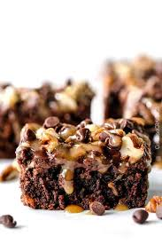

Home
Poke Turtle Brownies

Description
Crazy moist Poke Turtle Brownies seeping with pockets of caramel, infused with
pecans and chocolate chips, smothered in the BEST chocolate frosting and
topped with more caramel AKA the best brownies EVER!
Ingredients
Brownies
- 1 cup flour
- 1/2 teaspoon baking powder
- 1/2 teaspoon salt
- 1/4 teaspoon cinnamon (optional)
- 1 cup butter, melted (2 sticks)
- 3/4 cup unsweetened cocoa powder
- 4 large eggs
- 2 teaspoons vanilla extract
- 1 cup semi-sweet chocolate chips
- 1 1/4 cup pecans, roughly chopped, divided
- 3/4 cup Recipe Easy Creamy Caramel Sauce
- 1/4 cup mini semi-sweet chocolate chips (may sub
regular)
Chocolate Frosting
- 6 tablespoons butter, softened
- 1/4 cup + 2 tablespoons cocoa powder
- 2 tablespoons light corn syrup (may substitute
honey)
- 1 teaspoon vanilla extract
- 1 1/2 cups powdered sugar, sifted
- 2-3 tablespoons milk
Directions
- Preheat oven to 350 degrees F. Line a 9×13 pan
with parchment paper or aluminum foil so it
overhangs slightly (so you can easily lift brownies
out later) and lightly spray with nonstick cooking
spray. Set aside.
- Brownies: In a medium bowl, mix together flour,
baking powder, salt and cinnamon. Set aside.
- To a separate large bowl, whisk butter, sugar and
cocoa powder together. Add eggs to the batter one
at a time, beating after each addition just until
incorporated. Beat in vanilla. Fold in flour mixture
just until combined. Add 1 cup semi-sweet
chocolate chips and 3/4 cups chopped pecans to
batter and stir until just combined. Pour batter
evenly into pan.
- Bake at 350 degrees for 30-35 minutes. Let pan
cool on a wire rack for 5 minutes then poke holes
all over with the back of a chopstick or small
wooden spoon. Pour 1/2 cup caramel over
brownies and spread into holes with a spatula.
Refrigerate brownies for one hour or freeze for 30
minutes to let the caramel set. Meanwhile, prepare
the Chocolate Frosting.
- Chocolate Frosting: Beat butter, cocoa, corn syrup
and vanilla in small bowl until blended. Add
powdered sugar and 2 tablespoons milk and beat
until smooth, adding additional milk if needed to
reach spreading consistency.
- Once caramel has set, frost brownies with
Chocolate Frosting (you don’t have to use all of it
but I highly recommend it!). Sprinkle evenly with
1/2 cup chopped pecans, 1/4 cup mini chocolate
chips and drizzle with 1/4 cup caramel.
- You can serve immediately or refrigerate to allow
frosting to set and make cutting easier. I LOVE to
microwave my brownie serving for 15 seconds or
so before devouring.